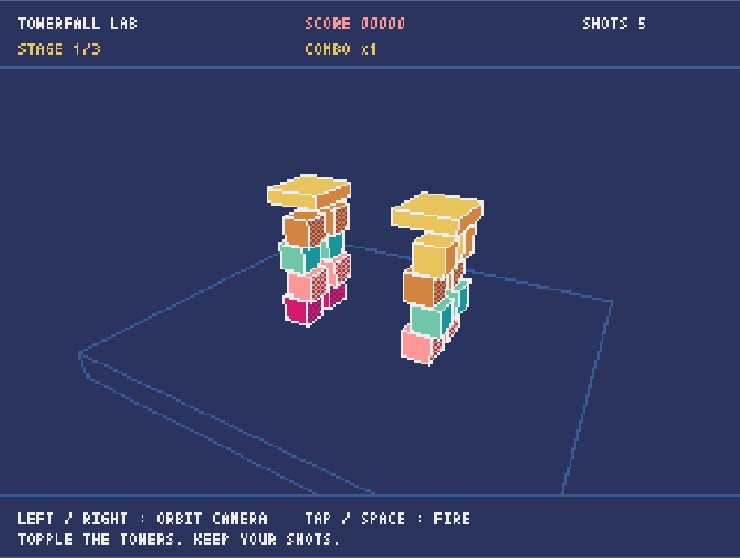
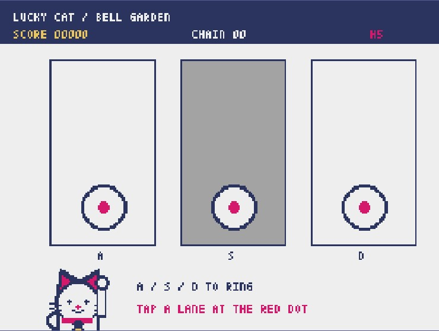
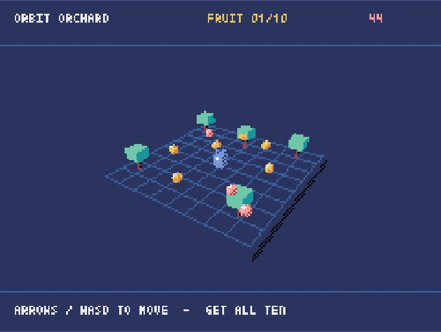
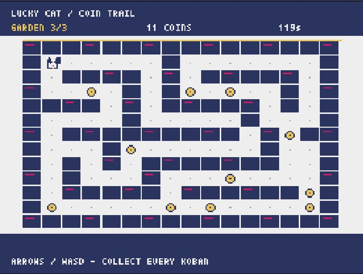
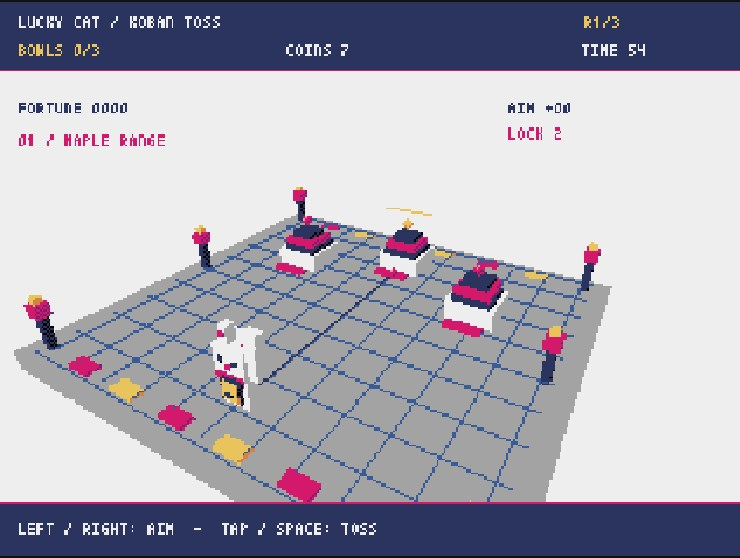
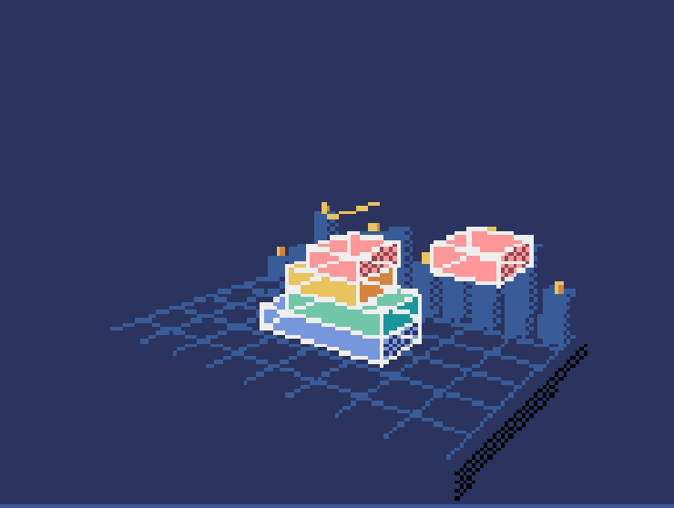
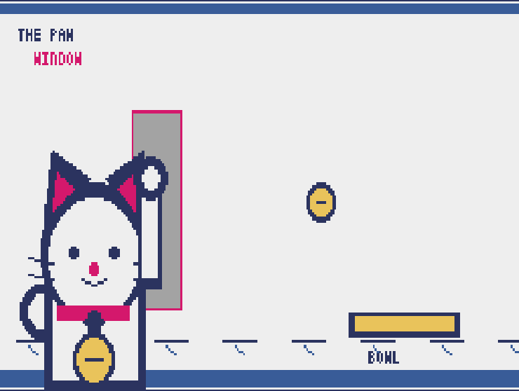

01
3D · Physics
Towerfall Lab
Orbit the camera, line up a shot, and bring down three different structures. The tower falls the way you hit it, so every shot counts.
Play Towerfall Lab ↗Little worlds with actual rules. A rhythm garden, a physics lab, an orchard in orbit, a coin trail, a toss of fortune, a growing skyline, and a cat with quick paws. Pick one and play.

Orbit the camera, line up a shot, and bring down three different structures. The tower falls the way you hit it, so every shot counts.
Play Towerfall Lab ↗
Three original songs with their own rhythms. Ring each bell on the red mark, build a chain, and earn a grade.
Play Bell Garden ↗
Three orchard rounds, each with a new fruit layout. Gather ten in each before the lanterns fade.
Play Orbit Orchard ↗
Guide the lucky cat through three hand-built gardens. Gather every koban before time runs out and carry your fortune to the next garden.
Play Coin Trail ↗
Aim a gold coin across three lantern-lit ranges. Land it in each bowl with limited throws, then beat all three rounds.
Play Koban Toss ↗
Drop seven moving floors in each of three city districts. Keep enough overlap to build the full skyline.
Play Skyline Stack ↗
Raise the lucky cat's paw when gold crosses the red band. Spare the red X marks and finish three waves with hearts left.
Play Paw Parry ↗Small experiments from the Pyxel 3.0 development preview. The seven above are our current picks; the rest are here to explore.